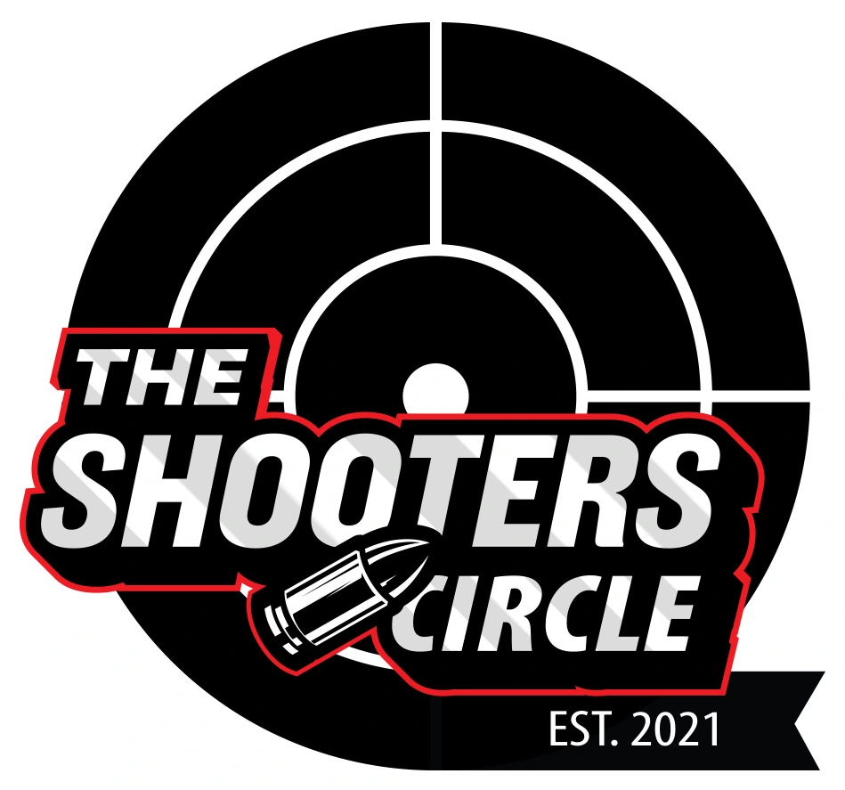
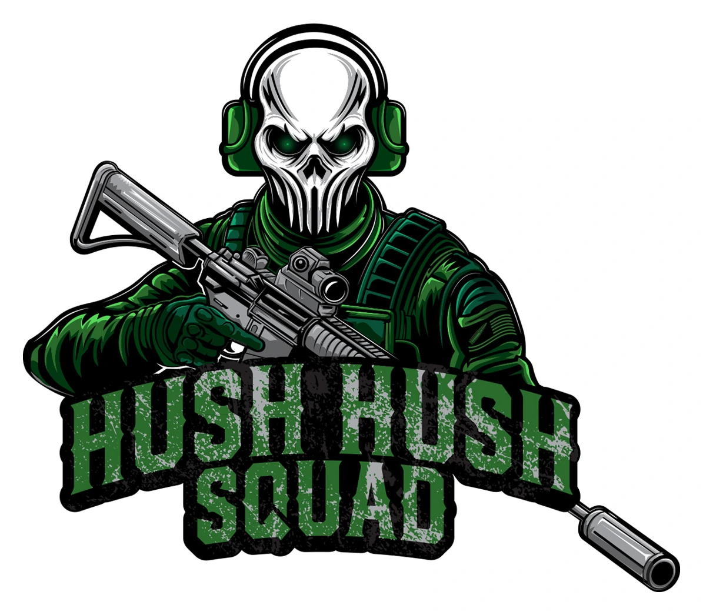
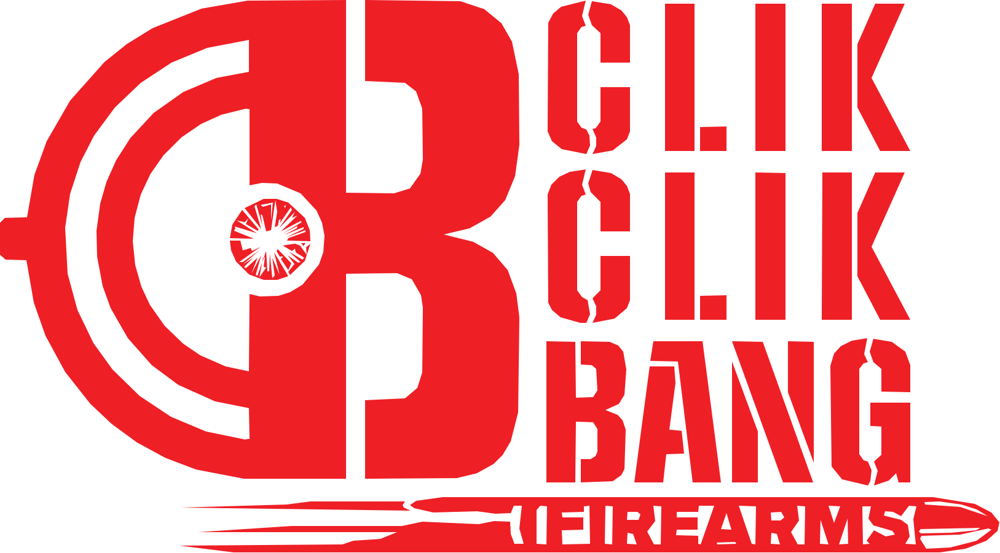

01 / Identity
Peaceful Shores
A detailed identity built around faith, place and symbolism, designed to hold together across church communications and branded applications.
View Case Study →
Logo Design
Your logo should do more than fill a space. It should give people something recognizable to connect with your business, product or idea. I build custom marks with enough personality to stand out and enough structure to work across the places your brand needs to live.
Selected Work
A mix of identity systems, emblems, wordmarks, sports branding and custom illustrated marks. Linked projects open into a deeper case study.



Featured Case Studies
A logo is the final result. These projects show more of the thinking, development and visual decisions behind the finished identity.
A detailed identity built around faith, place and symbolism, designed to hold together across church communications and branded applications.
View Case Study →A split visual identity using opposing tones and mirrored lion imagery to create a mark built around contrast, character and presence.
View Case Study →A more illustrative identity that combines character design, typography and tactical visual language into a strong mascot-driven brand system.
View Case Study →Built For Real Use
The goal is a logo system that can move with the brand instead of only looking good in one mockup.
The main mark built to carry the strongest version of the brand identity.
Supporting layouts and simplified marks for spaces where the primary logo does not fit.
Illustrated identities with more character, personality and visual storytelling.
Final artwork prepared for practical use across print, digital, merchandise and signage.
Process
Every logo starts with understanding what the business needs before the drawing begins.
I learn about the business, the audience and what the logo needs to communicate.
I explore different directions and work through the strongest ideas by hand.
The selected concept is cleaned up, balanced and tested in different sizes.
You receive polished logo files prepared for print, web and everyday use.